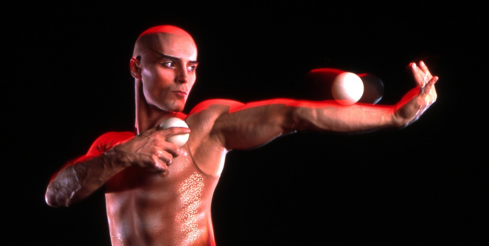
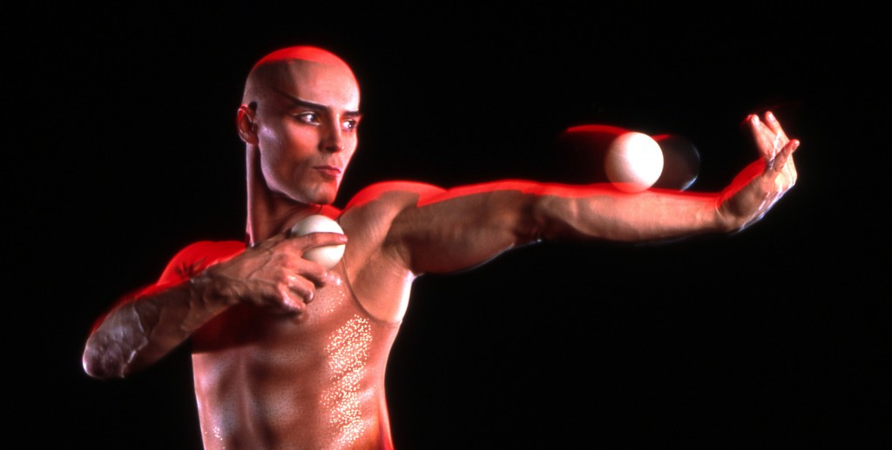
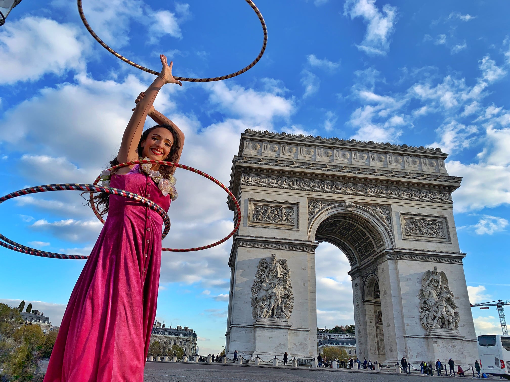
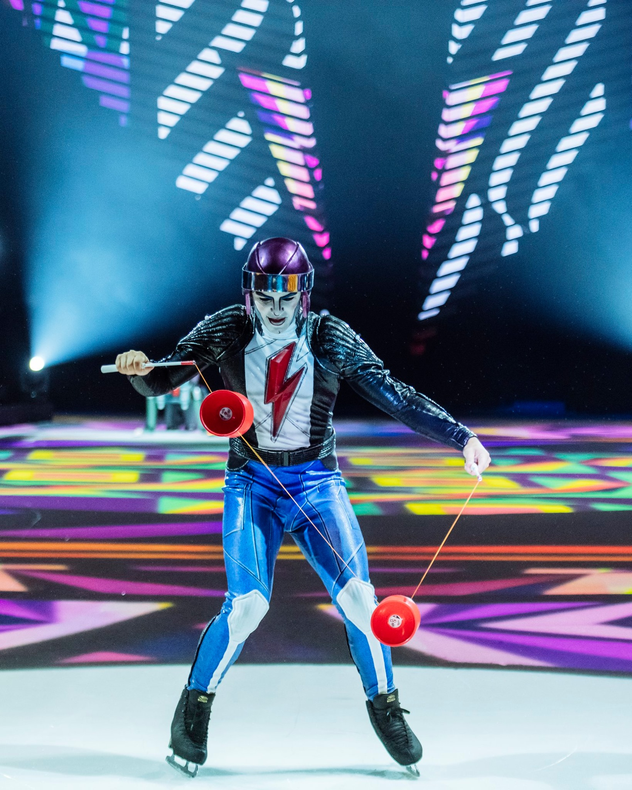
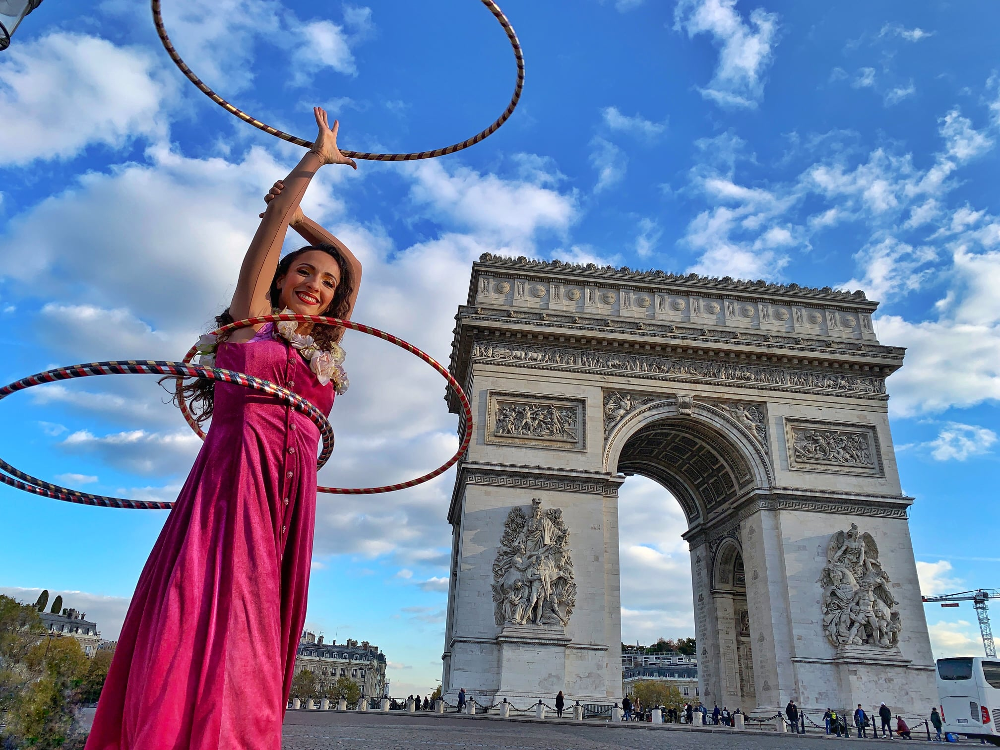
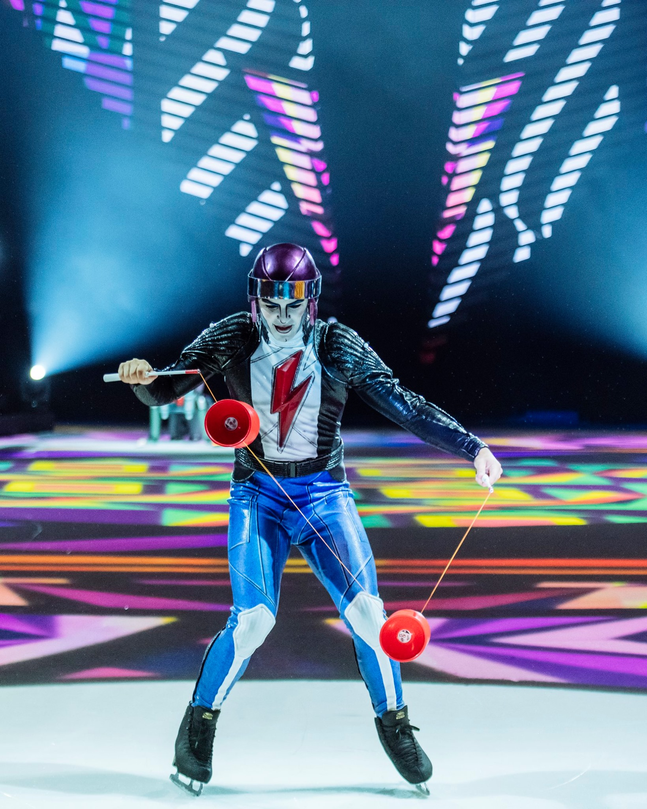

Juggling props are normally separated into a few categories of skill. Props can belong to one or more of these categories. These being:
- Juggling skills
- Dance (or spinning) skills
- Manipulation Skills
- Balance skills
Juggling Balls
This is the most common circus prop and first skill many jugglers take up. Some call it a gateway prop which evidently leads to trying to master many, many more. Here is a quick tutorial for how to learn to juggle 3 balls in just a few minutes! Tutorial
Contact Juggling
A wonderful mix of juggling and manipulation. Contact juggling takes a single (or multiple), solid, juggling ball sized sphere(s) that the user manoeuvrers across their body while maintaining contact and control
Juggling Clubs
Also referred to as “clubs” or “Skittles”, these are a step above the balls mentioned above. Because the clubs spin, it adds an extra dimension of timing and hand eye coordination to catch the club in the right place at the right time.
Hula Hooping
Hooping can be classified as a dance or a manipulation skill. People normally start this skill with traditional waist hooping but as people master the skill, the performer can instead hoop on their arms, legs or even nose (yes, this is a thing) and even transition their performance to have multiple hoops spinning on body parts simultaneously.
Poi
Poi is one of the main dance related skills as it relies heavily on rhythm, ensuring you and the props spin in tandem being sure that neither you nor the poi collide mid-spin.
Diabolo
Pretty much a larger version of the yo-yo, the diabolo consists of 2 sticks attached with a string and oversized yo-yo looking diabolo. The user has to ensure the diabolo is constantly spinning at high speeds on the string while manipulating it into the air and around their body.
Popular Online Stores
Popular stores to purchase your own circus equipment from
 

 


